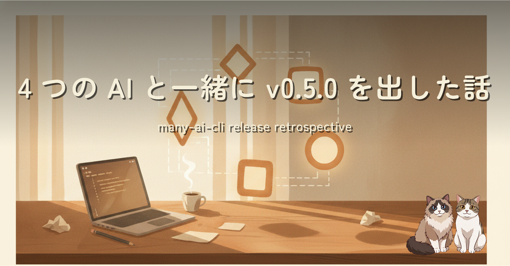
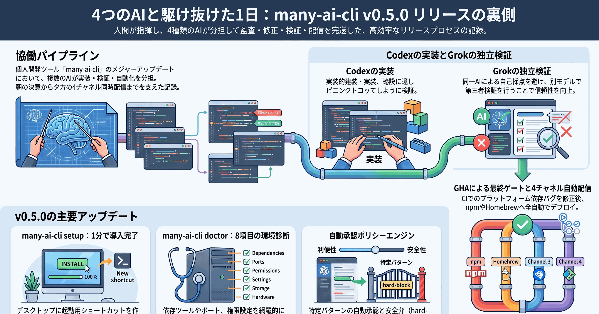

朝、コーヒーをいれてから「v0.4.1 出したい」と入力しました。夕方には v0.5.0 の GitHub Release ページが 13 個のアセットで埋まっていました。あいだで動いていたのは、Claude・Codex・Grok・GitHub Actions CI の 4 種類の AI と自動化でした。監査 43/100 からの立て直し、Grok による独立検証、Validate CI が 3 回落ちた顛末までを 1 日の記録として残します。
「AI 同士で分業する」ことを、監査 → 実装委託 → 第三者検証 → CI という 4 段のパイプラインで実際にやってみました。役割を分けて重ねないこと、同じ AI に自己採点させないこと、CI はローカルで通ってからが本番、そういう気づきを 1 日の中で拾い上げた記録です。同時に v0.5.0 の目玉として、非エンジニアにも届く setup サブコマンド、環境診断の doctor、hard-block ガード付きの autoapproval エンジンを 3 つ挿絵つきで紹介しています。

このパイプラインは、事前に設計したものではなくその場で自然に組み上がりました。Claude が把握したことを md に書いて Codex に渡す、Codex が実装した結果を Grok に検証させる、GHA が最後にゲートを閉じる。同じ AI に自己採点させないだけで、見落としが目に見えて減りました。